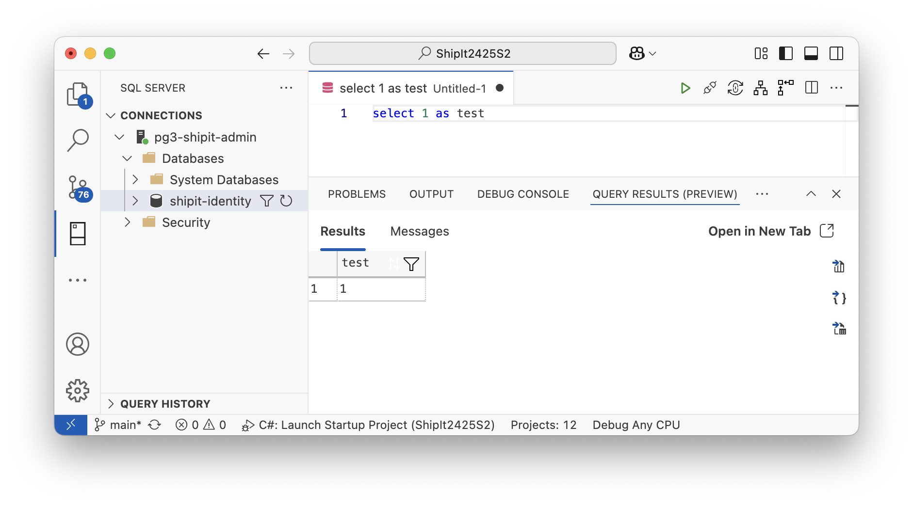
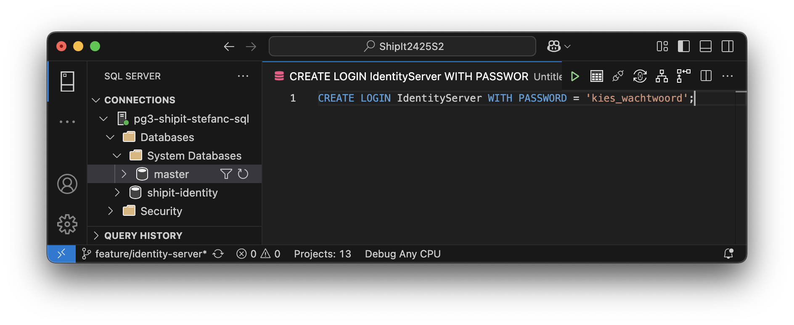

Authenticatie AJ 2526
Doel van deze les
-
Verschil tussen Authenticatie en Autorisatie
-
Verschil tussen User en Client
-
Identity Providers
-
Initiële Opzet Duende Identity Server
Authenticatie vs Autorisatie
| Authenticatie behandelt het onderwerp. Wie? Autorisatie behandelt het werkwoord. Wat? De intersectie van Authenticatie en Autorisatie bepaalt wie wat mag doen in het systeem. |
De web api’s die we gebouwd hebben, staan publiek op Azure. Eender wie ter wereld kan api calls maken. Het is logisch dat een web api een bepaalde graad van bereikbaarheid heeft via internet, maar de huidige situatie is niet wenselijk. We moeten beveiliging introduceren.
Op dit moment weten we niet wie de calls naar onze api’s maakt. De ene keer is het een oproep vanuit Postman tijdens de les, de andere keer is het een Noord-Koreaanse hacker. We willen de controle nemen over wie calls kan doen naar ons systeem. Om dit te doen, gaan we afdwingen dat het callende systeem of gebruiker zich identificeert, zich authenticeert.
De meeste applicaties hebben naast authenticatie ook nood aan verschillende (gebruikers)rollen. Denk bijvoorbeeld aan een HR-systeem. Jij hebt een account (authenticatie) en kan daarmee je verlof plannen en je eigen loonfiches bekijken. Je kan de loonfiches van je collega’s niet bekijken. Je hebt het recht, "de autoriteit", niet. De payroll officer van het HR departement moet dit wil kunnen doen om de job correct uit te voeren. Deze zal wel het recht, de autorisatie, krijgen.
Een web systeem dat weigert een call uit te voeren omdat de autorisatie en/of authenticatie niet goed zit, zal typisch onderstaande response codes gebruiken.
| 401 Unauthorized |
The request has not been completed because it lacks valid authentication credentials for the requested resource. |
| 403 Forbidden |
The server understands the request but refuses to authorize it. |
Achteraf gezien zouden 401 "Unauthenticated" en, in mindere mate, 403 "Unauthorized" betere namen voor de status codes zijn, maar ze zijn al in gebruik sinds 1996. We moeten dus een beetje van goeie wil zijn en gewoon accepteren dat het zo in elkaar zit.
Users en Clients
| Een user(account) behandelt de authenticatie van een mens die een systeem benadert. Een (applicatie)client behandelt de authenticatie van een systeem die een ander systeem benadert. |
Users
Wanneer een systeem door mensen gebruikt wordt, gaan we deze gebruikers user(accounts) toekennen. Een user zal typisch kenmerken dragen die deze identificeren in de alledaagse realiteit: naam, email, adres, telefoonnummer etc. In het systeem zal deze veelal uniek identificeerbaar zijn op basis van username. Vaak wordt het email adres gebruikt als username, maar dat hoeft niet. Er is ook een password om de account te beveiligen, en steeds vaker multifactor authenticatie.
Vele moderne web toepassingen voorzien de nodige functionaliteit opdat een gebruiker zichzelf kan registeren. Eventueel worden er bijkomende rechten manueel toegekend door een helpdesk.
(App) Clients
Niet enkel mensen gebruiken systemen. Ook systemen gebruiken andere systemen. De systemen die informatie uitwisselen, hebben een Client-Server relatie. Het client-systeem moet zich authenticeren bij het serversysteem om een call te kunnen maken. Hoewel technisch mogelijk, is het bad practice om users te voorzien voor systemen. Systemen hebben geen menselijke eigenschappen en integreren via api’s waar mensen (web) applicaties gebruiken.
Wanneer een systeem wil verbinden met ons systeem, voorzien we een Client voor dit client-systeem. Een client is bedoeld om één enkel systeem te authenticeren. Wanneer je samenwerkt met een bedrijf en er verschillende systemen geïntegreerd worden, voorzie je altijd een aparte client voor elk systeem. Zo blijft authenticatie en autorisatie van de verschillende systemen gescheiden.
Door aparte clients toe te kennen, verhinder je dat systemen per ongeluk verkeerde operaties in verkeerde systemen uitvoeren. Wanneer de credentials van een client zouden uitlekken, geven deze slechts toegang tot de rechten van het gerelateerde systeem, ipv de som van alle systemen.
Identity Providers
Nu concepten zoals Authenticatie, Autorisatie, Users, Clients etc gekend zijn, kunnen we deze functionaliteiten toevoegen aan ons systeem. Gaan we al de relevante logica, api’s validaties en dergelijke zelf programmeren? Alle scenario’s uitdenken? Allerhande afspraken betreffende systeemontwerp met klanten en front-end developers uitwerken? Nee.
Er bestaan meerdere Identity Providers die we kunnen integreren in onze applicatie. Deze implementeren verschillende internationaal gebruikte standaarden rond Authenticatie en Autorisatie. Al naargelang de professionele context waarin gewerkt wordt, zal er een keuze gemaakt worden.
Microsoft biedt een optie onder de vorm van Identity Platform. Dit is een geldige keuze, maar kan niet vlot gebruikt worden met Azure for Students. Tevens willen we vanuit de opleiding het beeld niet scheppen dat alles uit de Microsoft-winkel moet komen.
Een andere populaire Identity Provider is Identity Server. Deze implementeert de OpenID Connect en Open Auth 2.0 protocols. Identity Server is open-source, geschreven in .Net, en gratis voor onderwijs. Een goeie keuze voor ons project!
Azure SQL Server
Identity Server kan werken met een in-memory setup, maar dat is geen realistisch scenario. In de praktijk willen we natuurlijk client en user informatie persisteren. We opteren voor Azure SQL.
Opzetten
Ga naar de Azure Portal en kies het resource type "SQL Databases".
Selecteer een standaard Azure SQL Database.
Gebruik het aanbod om een gratis SQL Database te maken.
Een Azure SQL (Server) kan meerdere databanken bevatten. In deze wizard maak je een Server èn een Database aan.
| Als je reeds een Azure SQL database gebruikt voor jouw project, hoef je geen nieuwe server te maken. Selecteer je bestaande server uit de dropdown om de Identity Server database er aan toe te voegen. |
Onder Authentication Settings van de Server, kies je voor "Use both SQL Server and Microsoft Entra Authentication". Dit zorgt ervoor dat men zich kan authenticeren met een Azure account en ook een tradionele SQL Server user en wachtwoord.
-
Kies je eigen Azure account als Admin.
-
Stel ook de SQL server admin login credentials in.
Nu de SQL Server Instance ingesteld is, kunnen we verder met de configuratie van de databank. Onze academische context vereist relaxte netwerkbeveiliging. Kies voor:
-
"Public endpoint"
-
"Allow Azure services and resources to access this server"
-
"Add current client IP address"
Klik nu op "Review + Create". Controleer de instellingen en klik dan op "Create".
Na even wachten zal de database (en "server" instance) verschijnen als resource in het overzicht.
Verbinden (VS Code)
| De SQL Server (mssql) VS Code plugin vervangt Azure Data Studio. |
Het installeren van deze plugin zal de nodige dependencies meebrengen om je Azure resource te bekijken vanuit VS Code.
Voeg een connectie toe op basis van je eigen Azure Account.
Je kan naar wens queries uitvoeren. Let op! Op dit moment ben je hoogst waarschijnlijk met admin privileges verbonden.

Firewall
Bij het aanmaken van de DB heb je je IP toegevoegd aan de whitelist. Als je IP verandert, of je van op een andere locatie wil verbinden, moet je het relevante IP toevoegen.
| Bepaalde apps, zoals SSMS en de VS Code plugin zullen dit detecteren en je voorstellen het werk voor jou te doen. |
IdentityServer SQL Login
Op dit moment word je persoonlijke Azure identiteit, of een admin SQl login, gebruikt om te authenticeren bij de SQL Server. Dat is de bedoeling niet.
We gaan de SQL admin user niet door de applicatie laten gebruiken. We maken een aparte user voor Identity Server en kennen de gepaste rechten toe.
master database.CREATE LOGIN IdentityServer WITH PASSWORD = 'kies_een_wachtwoord';
De IS database user zal dus rechten nodig hebben om objecten aan te maken (DDL) in de databank, alsook queries uit te voeren (DML).
shipit (niet master!) database.CREATE USER IdentityServer FOR LOGIN IdentityServer
GO
GRANT CREATE TABLE TO IdentityServer
GO
GRANT ALTER ON SCHEMA::dbo TO IdentityServer
GO
GRANT INSERT, UPDATE, DELETE, SELECT, REFERENCES ON SCHEMA :: dbo TO IdentityServer
GOTest de credentials die je voor IS gemaakt hebt door een nieuwe database server connectie toe te voegen.
Je hebt nu twee verschillende connecties die naar dezelfde SQL Server verwijzen, maar met andere credentials.
-
Connectie op basis van jouw Azure Account.
-
Connectie op basis van IS SQL user credentials.
Identity Server
Installeren
Identity Server is vlot op te zetten via een dotnet template. Dit template project bevat Identity Server met ASP.NET Identity integratie. Op deze manier hebben we ineens alle nodige functionaliteit aan boord om het verhaal voor systemen en personen in te regelen.
dotnet new install Duende.IdentityServer.Templates
De duende templates worden nu beschikbaar gesteld op het systeem. Voeg een project toe aan de solution. Kies een duidelijke naam.
Start het nieuwe project op om te controleren of het project correct aangemaakt werd. De Identity Server UI verschijnt.
Deze UI bevat standaard pagina’s om in en uit te loggen. Web Apps die steunen op de authenticatie met IS, zullen de gebruiker redirecten naar deze login/logout pagina’s. Desgewenst kan je de IS pagina’s zelf stylen om visueel aan te sluiten bij je applicatie of bedrijf.
| Op school is de context beperkt. In de praktijk zal een Identity Provider typisch meer dan 1 applicatie binnen het bedrijf bedienen. In dat geval zal men de Identity Server niet in de applicatieve solution stoppen, maar wel in een losstaande solution. |
Discovery Document
Wanneer we onze Identity Server starten, kunnen we het openid-configuration endpoint bezoeken.
https://localhost:5001/.well-known/openid-configuration
Dit endpoint publiceert een Discovery Document. Het document bevat een gestructureerd (json) overzicht van de endpoints en andere configuratie gerelateerd aan onze Identity Server. Client systemen hebben (een deel van) deze informatie nodig om door de Auth flows te lopen.
{
"issuer":"https://localhost:5001",
"jwks_uri":"https://localhost:5001/.well-known/openid-configuration/jwks",
"authorization_endpoint":"https://localhost:5001/connect/authorize",
"token_endpoint":"https://localhost:5001/connect/token",
"userinfo_endpoint":"https://localhost:5001/connect/userinfo",
"end_session_endpoint":"https://localhost:5001/connect/endsession"
...
}
Users Activeren
Identity Server bevat standaard twee test gebruikers: bob/Pass123$ en alice/Pass123$.
Toch kunnen we op dit moment nog niet inloggen. Wanneer je navigeert naar een sectie die login vereist, zoals https://localhost:5001/diagnostics, zal je zien dat de login faalt.
Het systeem vertelt ons dat de AspNetUsers tabel niet bestaat. Helemaal niet gek gezien we effectief geen tabellen aangemaakt hebben.
ShipIt.IdentityServer/Data/Migrations/20240123193529_Users.cs verraadt dat het systeem met EF Core Migrations werkt.
We richting een verbinding met de Azure SQL Server in.
-
Verwijder
Microsoft.EntityFrameworkCore.Sqlitenuget. -
Voeg
Microsoft.EntityFrameworkCore.SqlServernuget toe. -
Pas de registratie van de DbContext aan.
-
Zet de connectionstring.
builder.Services.AddDbContext<ApplicationDbContext>(options =>
options.UseSqlServer(
builder.Configuration
.GetConnectionString("DefaultConnection")));De bestaande migration is niet geschikt voor SQL Server. We wissen de bestaande migrations folder.
dotnet ef migrations add InitAspNetUsers -c ApplicationDbContext -o Data/Migrations/AspNetUsers
dotnet ef database update -c ApplicationDbContext
Nu de tabellen aanwezig zijn, zal Identity Server niet langer met een 500 reageren op een login poging.
Dit ziet er al veel netter uit. Laten we de testgebruikers die IS aanlevert in de database stoppen. Zonder users in de database zal het natuurlijk nooit slagen.
stefancourteaux@MBP ShipIt.IdentityServer % dotnet run /seed
Een login poging met aanwezige user alice/Pass123$ zal nu wel slagen. Merk op dat de sub claim het Id van de user bevat.
Systemen Registreren
Je kan Identity Server systeemclients laten afhandelen op basis van een in-memory configuratie (Config.cs). Dit is zeer handig om te leren en testen. We starten met een in-memory configuratie en persisteren deze vervolgens in een echte databank.
We stellen als doel het beschermen van de ShipIt Quote Api. We testen dit initieel met Postman, wat ons brengt tot volgende stappen:
-
App Client registeren in Identity Server
-
Quote Api inhaken op Identity Server
-
Testen met Postman
Postman Client Registreren
public static class Config {
public static IEnumerable<IdentityResource> IdentityResources =>
new IdentityResource[] {
new IdentityResources.OpenId(),
new IdentityResources.Profile(),
};
public static IEnumerable<ApiScope> ApiScopes =>
new ApiScope[] {
new ApiScope("shipit.pricequotes.api")
};
public static IEnumerable<Client> Clients =>
new Client[] {
new Client{
ClientId = "postman-client", (1)
AllowedGrantTypes = GrantTypes.ClientCredentials, (2)
ClientSecrets = {
new Secret("eenGrootGeheim".Sha256()) (3)
},
AllowedScopes = { "shipit.pricequotes.api" } (4)
}
};
}| 1 | Kan een willekeurige string zijn. Gebruik een sprekende naam wanneer mogelijk. |
| 2 | Client is bedoeld om in een Client Credentials Flow gebruikt te worden. |
| 3 | In Identity Server houden we een hash bij van het secret. De cleartext versie wordt overhandigd aan de klant. Wij bewaren de cleartext versie niet. Moest Identity Server op dit moment al met een databank gekoppeld zijn, zouden we daarin het resultaat van de hash bewaren. |
| 4 | Scopes waar deze Client gebruik kan van maken. |
Quote Api Inhaken
Voeg Microsoft.AspNetCore.Authentication.JwtBearer toe aan ShipIt.PriceQuote.Api. Dit laat ons toe de authenticatie en autorisatie tijdens het bootstrappen van de api in te stellen.
//...
builder.Services.AddAuthentication()
.AddJwtBearer(options => (1)
{
options.Authority = "https://localhost:5001"; (2)
options.TokenValidationParameters.ValidateAudience = false; (3)
});
builder.Services.AddAuthorization();
//...| 1 | JwtBearer is het soort authenticatie token. |
| 2 | Onze service zal deze Identity Provider vertrouwen. |
| 3 | Optionele audience claim check. Out of scope voor de lessen. |
👩🔬 Observatie 1
Start Identity Server én de Quote Api op. Test het GET endpoint van de Quote Api met Postman. Dit zal gewoon werken. Waarom? Omdat de Quote Api op dit moment wel verbonden is met Identity Server, maar geen checks doet.
Om af te dwingen dat een caller een token nodig heeft om een operatie in onze Quote controller aan te roepen, plaatsen we het Authorize attribute.
[Route("api/[controller]")]
[Authorize] (1)
[ApiController]
public class QuoteController : ControllerBase
{
//...
}| 1 | Elke actie in deze Controller vereist nu een geauthenticeerde caller. |
👩🔬 Observatie 2
Start Identity Server én de Quote Api op. Test het GET endpoint van de Quote Api met Postman. Dit zal niet langer werken. Waarom? Omdat de Quote Api op dit moment de identiteit van de caller controleert, en deze afwezig is in het request.
We moeten een token ophalen bij Identity Server. Hiervoor maken we gebruik van de Client Credentials die we eerder geconfigureerd hebben.
| We kunnen de inhoud van een token analyseren op jwt.io. |
👩🔬 Observatie 3
Start Identity Server én de Quote Api op. Test het GET endpoint van de Quote Api met Postman met Authorization header. Het formaat van header waarde is "Bearer", gevolgd door een spatie, gevolgd door de inhoud van het token. Dit zal wel werken.
| In Postman kan je ook gebruik maken van de functionaliteit in de "Authorization" tab. |
EF Core
dotnet add package Duende.IdentityServer.EntityFramework
Gebruik dezelfde versie als Duende.IdentityServer.AspNetIdentity.
|
dotnet build
ConfigurationDbContext toe in HostingExtensions.cspublic static WebApplication ConfigureServices(
this WebApplicationBuilder builder)
{
builder.Services.AddRazorPages();
(1)
builder.Services.AddDbContext<ApplicationDbContext>(options =>
options.UseSqlServer(
builder.Configuration
.GetConnectionString("DefaultConnection"))); (3)
(2)
builder.Services.AddDbContext<ConfigurationDbContext>(options =>
options.UseSqlServer(
builder.Configuration
.GetConnectionString("DefaultConnection"), (3)
options => options.MigrationsAssembly(
typeof(Program).Assembly.GetName().Name))); (4)
//...
builder.Services
.AddIdentityServer(options =>
{
//...
})
.AddConfigurationStore() (5)
.AddAspNetIdentity<ApplicationUser>();
//...
}| 1 | Deze ApplicationDbContext stond er al en dient voor de users. |
| 2 | Deze ConfigurationDbContext is nieuw en dient voor app clients / IS config. |
| 3 | De DbContexts verwijzen naar dezelfde database, maar andere tabellen. |
| 4 | Op deze manier verschijnen de migrations in de source van onze binary, niet in degene die de DbContext bevat (de nuget) |
| 5 | Verwijder de InMemory items en registreer de EF Core config store. |
dotnet ef migrations add InitAppClients -c ConfigurationDbContext -o Data/Migrations/AppClients/ConfigurationDb
ShipIt.IdentityServer ... ├── Data │ ├── ApplicationDbContext.cs │ └── Migrations │ ├── AppClients │ │ └── ConfigurationDb │ │ ├── 20251116093539_InitAppClients.cs │ │ ├── 20251116093539_InitAppClients.Designer.cs │ │ └── ConfigurationDbContextModelSnapshot.cs │ └── AspNetUsers │ ├── 20251113110549_InitAspNetUsers.cs │ ├── 20251113110549_InitAspNetUsers.Designer.cs │ └── ApplicationDbContextModelSnapshot.cs ...
dotnet ef database update -c ConfigurationDbContext
De Identity Server (client) configuratie tabellen bestaan nu in de database.
Het kan handig zijn onze in-memory Config in database op te slaan om verder te kunnen testen met deze clients. Ik heb daarom de EnsureSeedData() methode uitgebreid.
//...
using (var scope = app.Services
.GetRequiredService<IServiceScopeFactory>().CreateScope()) {
var context = scope.ServiceProvider
.GetRequiredService<ConfigurationDbContext>();
Log.Debug("Overwriting db clients with Config.cs");
context.Clients.RemoveRange(context.Clients);
foreach (var client in Config.Clients)
context.Clients.Add(client.ToEntity());
context.SaveChanges();
Log.Debug("Clients overwrite done");
Log.Debug("Adding IdentityResources");
foreach (var resource in Config.IdentityResources)
if(!context.IdentityResources.Any(db =>
resource.Name == db.Name))
context.IdentityResources.Add(resource.ToEntity());
context.SaveChanges();
Log.Debug("Adding IdentityResources done");
Log.Debug("Adding ApiScopes");
foreach (var resource in Config.ApiScopes)
if(!context.ApiScopes.Any(db =>
resource.Name == db.Name))
context.ApiScopes.Add(resource.ToEntity());
context.SaveChanges();
Log.Debug("Adding ApiScopes done");
// ...stefancourteaux@MBP ShipIt.IdentityServer % dotnet run /seed
Doe de postman test opnieuw om te valideren dat alles nog correct werkt.